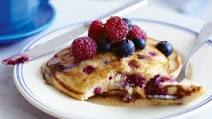

Berry Pancakes

Description
These pancakes will make your wife see you in another light, trust me. These pancakes are sweet, packed with berry nutritional goodness, and fun to make (especially if you include little ones in the preparation).For an added touch, cut these pancakes in a heart shape to really please the fam.
Ingredients
- Strawberries
- Blueberries
- Pancake Mix
- Milk
- (optional) Jelly
Directions
- Add 2 parts pancake mix one part milk or water in a large bowl.
- With whisk mix the hell out of mix with liquid.
- Add berries. Mix a little more.
- Heat up pan with large flat surface area (preferably non-stick)
- Melt enough butter to cover surface of pan
- Pour prepared pancake mix into pan
- Cook pancakes with medium to medium-low heat for best result. Flip pancake as soon as mix is firm enough to flip without breaking. Bubbles forming is a sign it is almost ready to be flipped. Cook remaining side until golden brown.